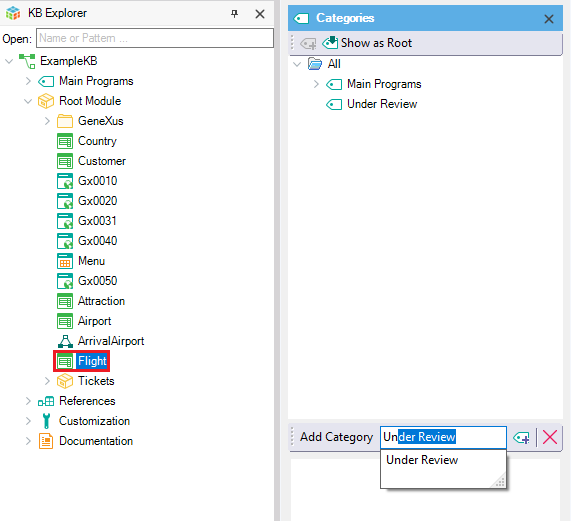
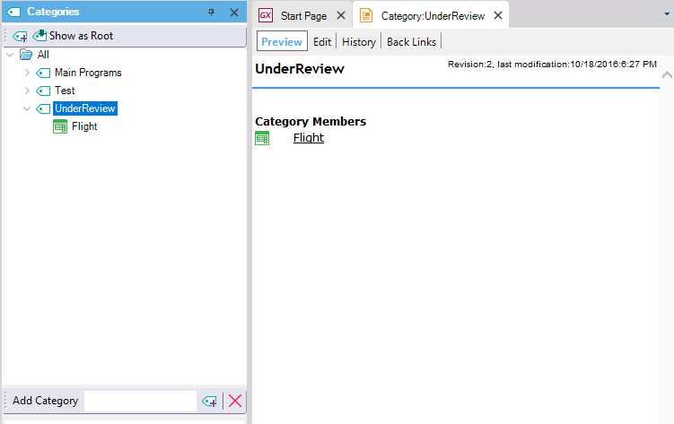
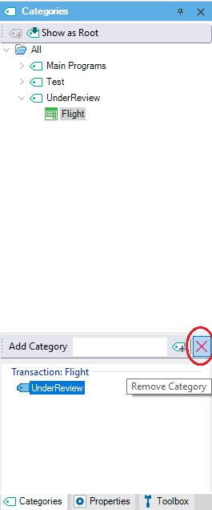
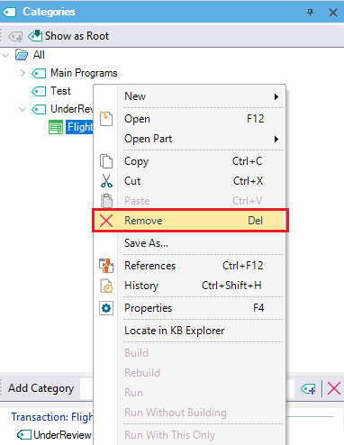
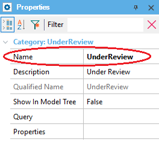
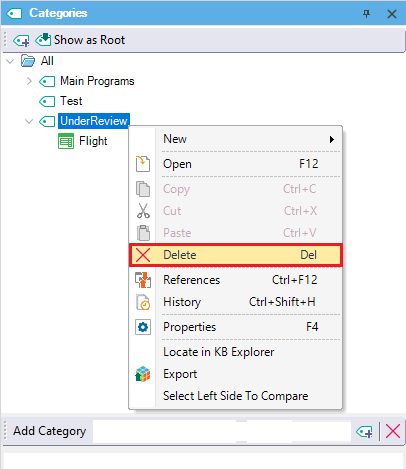

Once you have created a Category (see HowTo: Creating a Category), you can start working with it. Adding an Object to a CategoryYou can add any object to any Category (and even to more than one Category) by using the Categories window.
 You can verify that the object has been successfully added by selecting the Category in the Categories window. You can also drag and drop objects in a category to add them. When you double-click on a Category in the Categories window, the documentation page for the Category is displayed. It contains all the objects that belong to the Category, and it also lets you edit the page and describe the Category. You will see something like this:  A special category named "ToBeDefined" is automatically created to allow for fast access to documents, objects, etc, that are referenced but not yet created. The typical scenario where this happens is when you start describing a process in a Document. As you write, you can add links to other existing or non-existing documents or objects (i.e. documents or objects that are not yet "defined"). Once you save the document, you will see that references to existing documents are shown as links while references to non-existing ones will appear with a question mark (?). Those "missing" referenced documents will also be classified under the "ToBeDefined" category. This category cannot be deleted or renamed as it is a "system" category. Removing an Object from a CategoryYou can remove an object from a Category from the Categories window (displayed with the Properties window of the object), as follows:  You can also right-click on the object and select remove:  Renaming a CategoryYou can rename a Category from the Name property, in the Properties window  Deleting a CategoryYou can delete a Category (with or without associated objects), by right-clicking and selecting Delete, as shown below:  See also
|
| Backlinks |
| HowTo: Creating a Category |